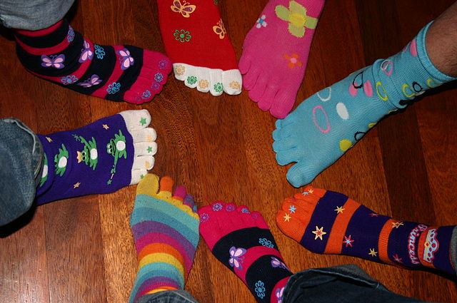

Present
The CSICSOCS technical program comprises multiple tracks. Submissions to any track are due by the end of the conference.
Research Track
We are currently soliciting student and faculty speakers to give talks of 2-5 minutes on their original "Research" in "Computer Science." A good talk is, above all, silly, just barely prepared, and, if possible, vaguely related to computer science. No research required. See the CFP for more detail.
Slide Karaoke Track
Too busy to prepare your talk? Give a slide karaoke talk. We provide the topic and slides. You give the talk.
Laugh Track
There are also many available slots for enthusiastic audience participation.
Attend
The main conference track is scheduled for 2:00pm-3:30pm in Room 396 of the Wellesley College Science Center. Complimentary light snacks are provided.
Registration
Early bird deadline: Sunday 11:37am Monday, May 9, 2016. $0 online RSVP. Includes free CSICSOCS excursion ticket to CS-Math frisbee game at 4:00pm in Munger Meadow.
On-site. $0. Just show up and laugh! Same for frisbee!
Accommodations
Wellesley students may arrange for overnight accommodations and meals in Wellesley College residence and dining halls, located within walking distance of the conference venue. Contact the office of Residential Life for reservations. Mention "CSICSOCS" for the undiscounted conference rate.
Contact
Send general questions to Ben Wood (benjamin.wood@) and inquiries about disability accommodations to Jim Wice (jwice@).
Important Dates
Today
Decide to participate.
Tomorrow
Begin preparing your talk.
11:59pm Sunday, May 8
11:37am, Monday, May 9, 2016
Early bird registration deadline (win a free ticket to the CSICSOCS excursion to the CS-math frisbee game!)
2:00pm Monday, May 9, 2016
CSICSOCS research and karaoke tracks, SCI 396.
Talk proposals due by end of conference.
4:00pm Monday, May 9, 2016
CSICSOCS Excursion:
CS-Math frisbee game, 4:00pm, Munger Meadow.
2016 Technical Program: Prepared Talks
The CSICSOCS 2016 proceedings followed the double-blind publishing model: works have been anonymized to protect the authors.
- Can I come back to you all on this? Torn between n-grams of commit messages / professor emails OR Becoming a Functional Adult with HOFL: Higher-Order Folding of Laundry OR doing a karaoke talk. I will figure it out by tomorrow!
- An Emoji-Based Lexical Analysis of This Text K. C. Just Sent Me
- Taking Down Capitalism Through CS, One Bank At A Time
- i'll let you know the title once i know what i'm talking about
- A billion monkeys typing on a billion typewriters CAN write Shakespeare
- CS240: A Musical Review
- How I Put Up Capitalism with CS
- Pun Generator: The Fun Generator
Call for Participation
Dear Silly Serious Computer Scientists of the College Science Center and beyond,
On behalf of the CSICSOCS 2016 organizing committee, I am
pleased to invite you to the First Annual Wellesley College
Completely Silly Serious International Conference
and Symposium On Computer Science (CSICSOCS 2016, pronounced:
"Sick
Socks!!"), to be held on Monday, May 9, 2016, in the
Wellesley College Science Center Room 396.
CSICSOCS is a premier forum for cutting-edge alleged "Computer Science research." Translation: Take a break during reading period to laugh and share silly talks with fellow computer science students and faculty!
We are currently soliciting student and faculty speakers to give talks of 2-5 minutes in two conference tracks: Research Talks and Slide Karaoke Talks. All submissions must be received by the end of the conference to ensure full consideration. This is a hard deadline.
Research Talks should describe original "Research" in "Computer Science," demonstrating a notable advance in the state of the art. Translation: A good talk is, above all, silly, just barely prepared, and, if possible, vaguely related to computer science. No research required.
Slide Karaoke Talks, a new format this year at CSICSOCS, offer researchers the opportunity to present exciting new work even if they cannot be bothered to do that work or prepare a talk themselves. Translation: Are you pressed for time and unable to prepare the talk you wanted to give? No worries, come give a slide karaoke talk. We provide the topic and slides, you give the talk!
Submit talk proposals, in the form of a message in a bottle, or a paper napkin note by carrier pigeon, to SCI E128, Wellesley College, or through the registration and submission system, no later than the end of the conference. Proposals for research talks should include between 0 and 63 words, optionally related to your topic (and optionally related to each other). Proposals submitted ahead of time will be fast-tracked for acceptance through a prestigious process of double-blind review by a committee of goslings, raven chicks, and fox kits, complete with an official s(qu)eal of approval and a listing in the conference program. On-site talk proposals will be accepted on a first-come first-serve basis as time allows.
Topics of interest to the CSICSOCS community include anything novel and vaguely "Computer Science" related. Examples include – but are not limited to – the following nascent topics and classical works:
- Introductory Predator Analysis: Buggles vs. Pythons
- Totally Crushing It: Evaluating Memory Alligator Performance
- N-gram Analysis of Student Commit Messages
- Emoji Sentiment Analysis of My Professor's Emails
- Spaces or Tabs? Great Conflicts of the Information Dark Ages
- Why Do Trees Grow Upside Down?
- Winked Lists: A New Linear Data Structure with O(;) Lookup Time
- C Shell Seashore Poetry: Dramatic Readings
- D. Zongker, Chicken Chicken Chicken: Chicken Chicken
- Data Seances and Visualization
- Commuter Science
- Nondeterministic Finicky Automata and Their Most Frustrating Applications
- Proof of a Maximum Upper Bound for Treadmill Running Time
- Static Hype Checking
- Becoming a Functional Adult with HOFL: Higher-Order Folding of Laundry
- Tangerine User Interfaces
- Gosling-Computer Interaction
- Gosling Updates with SQL: Structured Quacking Language (a class project for Databases with Webbed-Foot Interfaces)
- B. Wood, et al., The Barnyard of Pig Data Research
- Defeating Phony Security with Bluffer Overflow Attacks
- Discovery-Based Programming with the IC Language
- Your Much Funnier Idea
I look forward to an exciting technical program at this year's inaugural CSICSOCS. On behalf of the organizing committee and our sponsors, we hope to see you there and we extend our best wishes for the end of the semester!
Cordially yours,
Ben Wood
General Chair
CSICSOCS 2016
Venue
CSICSOCS is hosted this year by Room 396 at the elegant Wellesley College Science Center.

Wellesley College offers a network of free sidewalks and hallways for convenient transit to and from the conference venue.
Organization
Program Committee
- The Raven Chicks, Wellesley College Science Center
- The Goslings, Wellesley College
- The Fox Kits, Wellesley College Arboretum
General Chair
Ben Wood, Wellesley College Computer Science
Local Chair
Rita Purcell, Wellesley College Computer Science
Publicity Chairs
Alice Zhou and Jackie Young, Wellesley CS Club
Acknowledgments
With thanks for inspiration to UW CSE PoCSci: Potentially Computer Science.
Sponsors
Gold Sponsors
- Wellesley College Computer Science Department
- Wellesley College Computer Science Club
Silver Partners
- ACM SIGFUN: Association for Computing Mockery Special Interest Group on Fun
Bronze Affiliates
- IEEE: Institute of Enthusiastically Eclectic Engineers

Photo credit: CC-BY S B@flickr.com